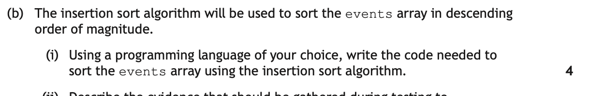

Standard Algorithms at Advanced Higher
A standard algorithm is a well-known, reusable method for a common programming job. You already met three at Higher — linear search, find minimum/maximum and count occurrences. Advanced Higher adds three more, and these are the ones examined here:
- Binary search — find an item in a sorted list, fast;
- Bubble sort — put a list in order by repeatedly swapping neighbours;
- Insertion sort — put a list in order by building up a sorted region one item at a time.
You must be able to describe, exemplify and implement all three, and — just as heavily examined — compare their efficiency and justify choosing one over another. Questions rarely say "write a bubble sort" in isolation. They give you a data structure, ask for the algorithm applied to that structure, and award marks for handling the structure correctly.
Key Terms
Reaching a value in each data structure
Every algorithm below appears twice: once on a plain 1D array, and once on the structure the exam actually gave that year. The logic never changes — only the way you reach the value being compared. Learn these four forms and every variant becomes routine:
| Structure | Reaching one value | Example | Why |
|---|---|---|---|
| 1D array | arrayName[index] |
times[4] |
One index, one value. |
| 2D array | arrayName[row][column] |
events[4][2] |
Row first, then column. The column number picks the attribute. |
| Array of records | arrayName[index].fieldName |
readingsArray[4].rainfall |
The index picks the record, the field name picks the value inside it. |
| Array of objects | arrayName[index].getFieldName() |
orderList[4].getOrderTotal() |
The instance variable is private, so it can only be read through a public getter. |
readingsArray[4].rainfall reads one directly. In an array of objects the instance variables are encapsulated — orderList[4].orderTotal would be rejected, because code outside the class cannot reach a private variable. You must call the getter the class provides: orderList[4].getOrderTotal(). Marking instructions award a mark for this on its own. See the OOP page for why.Binary Search
How it works
A binary search finds a value by repeatedly halving the part of the list still worth looking at. It keeps three markers: low and high mark the range still in play, and mid is the element halfway between them.
Each time round, it compares the value at mid with the target and does one of three things:
- the values are equal — found, stop;
- the target is greater — it cannot be in the lower half, so
low = mid + 1; - the target is smaller — it cannot be in the upper half, so
high = mid - 1.
The loop continues while the target has not been found and low <= high. If low passes high the range is empty, which means the target is not in the list at all.
![A sorted array of eleven values: 3, 8, 12, 17, 23, 31, 44, 56, 68, 79 and 91, with indices 0 to 10, searched for the value 79. Pass 1 has low at index 0 and high at index 10, giving mid at index 5 which holds 31; because 79 is greater than 31 the lower half is discarded and low becomes 6. Pass 2 has low at 6 and high at 10, giving mid at index 8 which holds 68; because 79 is greater than 68 low becomes 9. Pass 3 has low at 9 and high at 10, giving mid at index 9 which holds 79, so the target is found after three comparisons. Discarded elements are greyed out at each pass and the mid element is highlighted in gold. A note explains that a linear search would have checked ten elements to reach 79, while binary search needed three, but only because the array was already sorted.](../resources/sdd/sa-binary-search.svg)
Binary Search Visualiser
Click any value to search for it, then step through. low, mid and high move and the discarded half greys out, with the matching line of pseudocode highlighted — while a linear search runs the same job underneath so the two comparison counters can be watched pulling apart. Try a value near the front, then one near the end, then a value that is not there at all.
Top level and refinement
Written as a design, the algorithm is three steps, only one of which needs refining:
1. set the search range to the whole array, and found to "not yet"
2. repeat until the target is found or the range is empty
3. report the position found, or that the target is absent2.1 calculate mid, halfway between low and high
2.2 if the value at mid is the target
2.3 record that it has been found, at position mid
2.4 else if the target is greater than the value at mid
2.5 discard the lower half: low = mid + 1
2.6 else
2.7 discard the upper half: high = mid - 1On a 1D array
The plain version. Note that it returns the position rather than just true or false — the position is what a real program needs, because it is how you get at everything else stored about that item:
FUNCTION binarySearch(times, target) RETURNS INTEGER
SET low TO 0
SET high TO length(times) - 1
SET found TO -1
WHILE low <= high AND found = -1 DO
SET mid TO (low + high) DIV 2
IF times[mid] = target THEN
SET found TO mid
ELSE IF times[mid] < target THEN
SET low TO mid + 1
ELSE
SET high TO mid - 1
END IF
END WHILE
RETURN found
END FUNCTIONDIV (integer division) throws away the remainder, so mid is always a whole index. found starts at −1 because that is not a valid index, so it doubles as "not found" and as the answer. And the loop condition needs both tests: without low <= high a missing target loops forever.On an array of records
Now the version the exam sets. The array holds records, and the search compares one field of each record — reached with arrayName[index].fieldName. Everything else is identical:
# rainfallArray holds 32 records of {STRING local, INTEGER averageRainfall}
# sorted into alphabetical order of local
FUNCTION findAuthority(rainfallArray, searchName) RETURNS INTEGER
SET low TO 0
SET high TO 31
SET found TO -1
WHILE low <= high AND found = -1 DO
SET mid TO (low + high) DIV 2
IF rainfallArray[mid].local = searchName THEN # field access
SET found TO mid
ELSE IF rainfallArray[mid].local < searchName THEN
SET low TO mid + 1
ELSE
SET high TO mid - 1
END IF
END WHILE
RETURN found
END FUNCTIONAnd this is the payoff. You searched on one field, but having the position gives you every field of that record:
SET position TO findAuthority(rainfallArray, "Stirling")
IF position <> -1 THEN
SEND rainfallArray[position].local & " had " &
rainfallArray[position].averageRainfall & " cm" TO DISPLAY
ELSE
SEND "Local authority not found" TO DISPLAY
END IFclass Reading:
def __init__(self, local, average_rainfall):
self.local = local
self.average_rainfall = average_rainfall
def find_authority(rainfall_array, search_name):
low = 0
high = len(rainfall_array) - 1
while low <= high:
mid = (low + high) // 2 # // is integer division
if rainfall_array[mid].local == search_name: # field access
return mid
elif rainfall_array[mid].local < search_name:
low = mid + 1
else:
high = mid - 1
return -1
position = find_authority(rainfall_array, "Stirling")
if position != -1:
print(rainfall_array[position].local, rainfall_array[position].average_rainfall)Efficiency — binary search vs linear search
A linear search checks every element from the start until it finds the target or runs out. In the worst case that is n comparisons for n items. A binary search throws away half of what remains at every step, so the worst case is the number of times n can be halved before nothing is left — roughly log₂n:
![A horizontal bar chart on a logarithmic scale comparing worst-case comparisons for linear and binary search at four array sizes. For 10 items, linear search needs 10 comparisons and binary search 4. For 100 items, linear needs 100 and binary 7. For 1000 items, linear needs 1000 and binary 10. For 1000000 items, linear needs 1000000 and binary 20. Linear search bars are red and binary search bars are green. A note explains that for a million items it is a million comparisons against twenty, and that every doubling of the data adds just one comparison to a binary search.](../resources/sdd/sa-search-efficiency.svg)
| Linear search | Binary search | |
|---|---|---|
| Data must be sorted? | No — works on anything | Yes, always |
| Worst case | n comparisons | about log₂n comparisons |
| 1000 items | up to 1000 | up to 10 |
| Growth | Double the data, double the work | Double the data, one extra comparison |
| Best for | Small or unsorted lists; a one-off search | Large sorted lists, searched repeatedly |
Worked Example — binary search in the exam
This is 2023 Question 5(b), worth 6 marks. The same question is built up as a design problem on the Design page, and examined for its data structure on the Data Structures page. Here the focus is the algorithm itself.
The scenario:
![2023 Question 5. EnviroScot has set up 500 weather stations across Scotland to track the effect of climate change. Several weather stations have been placed in each of the 32 local authorities. The rainfall in centimetres for 28 February 2023 from all 500 weather stations has been stored in a CSV file. A structure diagram shows the Climate Tracker program with five modules: read weather data from file, extract unique local authority names, insertion sort local authority names, calculate average rainfall for each local authority, and compare local authority data. The data is read into an array of 500 records called readingsArray with the record structure RECORD reading IS open brace STRING place, STRING authority, INTEGER rainfall close brace.](../resources/sdd/worked-examples/ah_sa_q3-1.png)
Read the structure diagram before the question. Module 3 is an insertion sort of the local authority names. That is not decoration — it is there precisely so that module 5 can binary search them. A question that gives you a sort and then a search is telling you the two are connected.
b Design an algorithm using binary search and display the results 6 marks
![Question 5(b). The program is required to compare the average rainfall for four local authorities. Users should be able to enter the names of four local authorities. The program will then use the binary search algorithm to find each local authority and its associated average rainfall. The output will be a diagram showing the average rainfall for each of the four local authorities, with sample output showing Borders, Inverclyde, Stirling and Highlands each followed by a row of asterisks. Using pseudocode, design an algorithm to enter the names of the local authorities requested by the user, apply the binary search algorithm to find the rainfall data for each, and display the diagram with one asterisk representing 1 cm of average rainfall. 6 marks.](../resources/sdd/worked-examples/ah_sa_q3-2.png)
Six marks, and the marking instructions split them almost line by line. Read the bullet points in the question as a to-do list: get four names, search for each one, display a row of asterisks for each. So the shape is a loop of four, containing a search, containing a display.
1The outer loop and the heading
Four authorities means a fixed loop of four, and the sample output has a heading above the bars:
display "Average rainfall (cm) for the requested local authorities"for entry = 0 to 3 receive searchName from keyboardend for2Set the search up — inside the loop
The four binary search variables must be reset for every name. Initialise them outside the loop and the second search starts with a range already collapsed by the first — a classic way to lose two marks:
for entry = 0 to 3 receive searchName from keyboard set low = 0 set high = 31 set found = falseend for3The search loop itself
Halve the range each time, comparing the local field of the record at mid. Note this is a conditional loop — you cannot know in advance how many halvings it will take:
set found = false while low <= high and found = false set mid = round down of (low + high) / 2 if rainfallArray[mid].local = searchName then set found = true else if rainfallArray[mid].local < searchName then set low = mid + 1 else set high = mid - 1 end if end while4Use the result — the other field of the record
When the search succeeds, mid is the position of the record. Display its local field, then loop once per centimetre of its averageRainfall field printing an asterisk. Guarding the display with if found is what turns "I did a search" into "I used the result of the search", and it carries a mark of its own:
end while if found = true then display rainfallArray[mid].local followed by a space for star = 1 to rainfallArray[mid].averageRainfall display "*" on the same line end for start a new line end ifSample Answer
display "Average rainfall (cm) for the requested local authorities"
for entry = 0 to 3
receive searchName from keyboard
set low = 0
set high = 31
set found = false
while low <= high and found = false
set mid = round down of (low + high) / 2
if rainfallArray[mid].local = searchName then
set found = true
else if rainfallArray[mid].local < searchName then
set low = mid + 1
else
set high = mid - 1
end if
end while
if found = true then
display rainfallArray[mid].local followed by a space
for star = 1 to rainfallArray[mid].averageRainfall
display "*" on the same line
end for
start a new line
end if
end forWhere the six marks are: asking for four authorities and displaying the heading; initialising and updating found and mid; the conditional loop for the search; initialising and updating low and high; using the result of the search in the display; and displaying the name together with the asterisks.
Marking Instructions
![Marking instructions for 2023 Question 5(b). 1 mark for asking the user to enter 4 local authorities and displaying the bar chart heading. 1 mark for correctly initialising and updating found and mid needed for the binary search. 1 mark for the conditional loop needed for the binary search. 1 mark for correctly initialising and updating low and high needed for the binary search. 1 mark for using the result of the binary search in the display. 1 mark for displaying the location name together with stars used to represent the average rainfall.](../resources/sdd/worked-examples/ah_sa_q3-2_ans.png)
Bubble Sort
How it works
A bubble sort walks along the list comparing every adjacent pair. If a pair is the wrong way round it swaps them. One walk from end to end is a pass.
Because a large value keeps getting swapped rightwards until something larger stops it, the biggest value in the list always ends up at the far right by the end of the first pass. The second pass leaves the second-biggest in place, and so on — the sorted region grows from the right-hand end:
![The array 5, 1, 4, 2, 8 undergoing one pass of a bubble sort. First 5 and 1 are compared, are in the wrong order and are swapped, giving 1, 5, 4, 2, 8. Then 5 and 4 are compared and swapped, giving 1, 4, 5, 2, 8. Then 5 and 2 are compared and swapped, giving 1, 4, 2, 5, 8. Finally 5 and 8 are compared and are already in order, so no swap is made. After one pass the largest value, 8, has bubbled to the end and is in its final place. A note explains that the next pass need only go as far as the second-last element, and that if a whole pass makes no swaps the array is already sorted, which is what the swapped flag detects.](../resources/sdd/sa-bubble-sort.svg)
Two refinements make it respectable, and both earn marks:
- Shorten each pass. After pass 1 the last element is finished, after pass 2 the last two are, and so on — so each pass can stop one element earlier than the last.
- The swapped flag. If an entire pass makes no swaps, nothing was out of order, so the list is already sorted and the algorithm can stop immediately instead of grinding through the remaining passes.
Bubble Sort Animator
Every comparison and every swap, with the matching line of pseudocode highlighted as it runs. Turn the swapped flag off to see how much extra work it saves on nearly sorted data, and switch to records to see what changes when the array holds more than a number.
Top level and refinement
1. keep making passes until a pass makes no swaps
2. on each pass, compare every adjacent pair and swap those out of order
3. after each pass, shorten the next one by one element2.1 assume no swaps will happen this pass
2.2 for each adjacent pair in the unsorted part
2.3 if the left value is greater than the right value
2.4 swap them, using a temporary variable
2.5 record that a swap happenedOn a 1D array
PROCEDURE bubbleSort(times)
SET unsorted TO length(times) - 1
SET swapped TO TRUE
WHILE swapped = TRUE DO
SET swapped TO FALSE
FOR index FROM 0 TO unsorted - 1 DO
IF times[index] > times[index + 1] THEN
SET temp TO times[index] # the three-line swap
SET times[index] TO times[index + 1]
SET times[index + 1] TO temp
SET swapped TO TRUE
END IF
END FOR
SET unsorted TO unsorted - 1 # shorten the next pass
END WHILE
END PROCEDURE> sorts ascending; < sorts descending. Exam questions very often ask for descending — "the three most expensive orders", "strongest earthquake first" — so read the required order before writing the comparison.On an array of objects
Same algorithm, two changes — and both are worth marks. The comparison must go through a getter, because the instance variable is private. And the swap must move the whole objects, not the values being compared:
# orderList holds Order objects; orderTotal is private, so getOrderTotal() reads it
PROCEDURE bubbleSort(orderList)
SET unsorted TO length(orderList) - 1
SET swapped TO TRUE
WHILE swapped = TRUE DO
SET swapped TO FALSE
FOR index FROM 0 TO unsorted - 1 DO
IF orderList[index].getOrderTotal() < orderList[index + 1].getOrderTotal() THEN
SET temp TO orderList[index] # swap the OBJECTS,
SET orderList[index] TO orderList[index + 1] # not their totals
SET orderList[index + 1] TO temp
SET swapped TO TRUE
END IF
END FOR
SET unsorted TO unsorted - 1
END WHILE
END PROCEDUREdef bubble_sort(order_list):
unsorted = len(order_list) - 1
swapped = True
while swapped:
swapped = False
for index in range(unsorted):
# getter, because order_total is private to the Order class
if order_list[index].get_order_total() < order_list[index + 1].get_order_total():
# swapping whole objects keeps every order with its own total
order_list[index], order_list[index + 1] = order_list[index + 1], order_list[index]
swapped = True
unsorted = unsorted - 1orderList[index].orderTotal instead of the getter — rejected, because a private instance variable cannot be read from outside its class. And swapping only the totals, so the objects keep their positions while their totals move: the array ends up sorted by a number that no longer belongs to the order beside it. If you find yourself writing SET temp TO orderList[index].getOrderTotal(), stop.Worked Example — bubble sort in the exam
2023 Question 3(f), worth 4 marks — a bubble sort over an array of objects, which then has to display the top three.
The scenario and its class diagram:
![2023 Question 3. FlavourFusion Cafe is creating an ordering system handling sit-in, delivery and collection orders, implemented in an object-oriented language. An order can contain a maximum of 50 items, all items for delivery and collection orders must be added when the order is made, extra items can be added to sit-in orders during the meal, and all delivery orders have a delivery charge. A simplified UML class diagram shows an Order class with private orderNumber as integer, orderItems as an array of OrderItem, orderStatus as string, orderTotal as real and numberItems as integer, and public methods addItem, updateOrderStatus, calcOrderTotal, getOrderTotal and getOrderNumber. An OrderItem class holds private itemName as string and itemCost as real with public methods OrderItem, getItemCost, setItemName and setItemCost. Three sub-classes inherit from Order: SitIn with numCust, tableNum and staffName; Delivery with orderTime, driver and deliveryCharge, which overrides calcOrderTotal; and Collection with orderTime and collectTime.](../resources/sdd/worked-examples/ah_sa_q1-1.png)
Note what the class diagram gives you. orderTotal is private (the −), and there is a public getOrderTotal(). That pairing is the question telling you which one to use.
f Design a bubble sort and display the three most expensive orders 4 marks
![Question 3(f). At the end of each day the owners want to view details of the three most expensive orders for that day. Sample data in the orderList array is shown in a table with columns orderNumber, orderItems, orderStatus, orderTotal and numberItems, listing orders 34 with total 45.97, 35 with 56.87, 36 with 23.34 and 37 with 73.29, each holding an array of OrderItem and a status of Complete. Using pseudocode, design the procedure bubbleSort of orderList. This procedure will sort the orderList array and display the orderNumber and orderTotal of the three most expensive orders in the sorted array. Your procedure should make use of the bubble sort algorithm. 4 marks.](../resources/sdd/worked-examples/ah_sa_q1-2.png)
Read the four marks off the task. The marking instructions want: the two loops; the comparison in descending order using the getter; the swap of whole objects; and the display of the top three, again using getters. Note the procedure does two jobs — sort, then display — so it needs a second loop after the sort finishes.
1Which order, and therefore which operator?
"The three most expensive" and a sorted array means sort descending, so the largest totals sit at the start. That makes the comparison <: swap when the left order is cheaper than the right one.
2The two loops
An outer conditional loop driven by the swapped flag, and an inner fixed loop over the adjacent pairs:
procedure bubbleSort(orderList) start conditional loop set swapped = false start fixed loop from 0 to length of orderList - 2 end fixed loop end conditional loop when swapped = falseend procedure3The comparison and the swap
Compare through getOrderTotal(), and swap the objects:
start fixed loop from 0 to length of orderList - 2 if orderList[loop].getOrderTotal() < orderList[loop + 1].getOrderTotal() then swap the two order objects set swapped = true end if end fixed loop4The display, after the sort
Once sorted descending, the three most expensive are simply positions 0, 1 and 2 — a fixed loop of three, again reading through getters:
end conditional loop when swapped = false start fixed loop from 0 to 2 display orderList[loop].getOrderNumber() and orderList[loop].getOrderTotal() end fixed loopSample Answer
procedure bubbleSort(orderList)
start conditional loop
set swapped = false
start fixed loop from 0 to length of orderList - 2
if orderList[loop].getOrderTotal() < orderList[loop + 1].getOrderTotal() then
swap the two order objects
set swapped = true
end if
end fixed loop
end conditional loop when swapped = false
start fixed loop from 0 to 2
display orderList[loop].getOrderNumber() and orderList[loop].getOrderTotal()
end fixed loop
end procedureWhere the four marks are: the inner fixed and outer conditional loops correct; sorting in descending order using the getter; swapping the objects; and displaying the top three afterwards, again using getters. The marking instructions add that sorting ascending and then displaying the last three in reverse can still gain full marks.
Marking Instructions
![Marking instructions for 2023 Question 3(f). Award 1 mark for inner fixed and outer conditional loops correct. Award 1 mark for sorting in descending order indicating correct use of getters. Award 1 mark for swap objects. Award 1 mark for displaying top three after the sort, indicating correct use of getters. Note: if the candidate has sorted in ascending order and displays the last three elements in descending order, a maximum of 4 marks can still be awarded. A sample solution is given as a numbered procedure bubbleSort of orderList with a conditional loop, swapped flag, fixed loop from 0 to length minus 2, a comparison of orderList at loop dot getOrderTotal with orderList at loop plus 1 dot getOrderTotal, a swap of the two order objects, and a final fixed loop from 0 to 2 displaying the order number and order total.](../resources/sdd/worked-examples/ah_sa_q1-2_ans.png)
Insertion Sort
How it works
An insertion sort builds a sorted region at the left-hand end of the list and grows it by one element at a time. It is exactly how most people sort a hand of playing cards.
The first element counts as a sorted region of one. Then, for each remaining element in turn:
- lift it out into a temporary variable — call it
current; - shift right every value in the sorted region that is larger than
current, opening a gap; - drop
currentinto the gap.
![Three steps of an insertion sort on the array 5, 2, 4, 6, 1. A band above the array marks the sorted region on the left and the not-yet-sorted region on the right. In the first step the current value is 2; 5 is larger so it shifts one place right and 2 is inserted in front of it, giving 2, 5, 4, 6, 1. In the second step the current value is 4; 5 is larger so it shifts right, but 2 is not, so 4 is inserted after it, giving 2, 4, 5, 6, 1. In the third step the current value is 1; everything is larger, so all four values shift right and 1 goes to the front. A note explains that the sorted region on the left grows by one each time until the whole array is sorted.](../resources/sdd/sa-insertion-sort.svg)
current down once at the end, so a run of five shifts costs six assignments rather than fifteen. That is the source of its efficiency advantage, and it is what a comparison question is looking for.Insertion Sort Animator
The current value lifts out of the array and hovers while every larger value slides right, then drops into the gap, with the sorted region growing from the left. Try the nearly sorted preset and watch the inner loop exit on its first comparison almost every time.
Top level and refinement
1. treat the first element as a sorted region of one
2. for each remaining element in turn, insert it into the sorted region
3. stop when every element has been inserted2.1 lift the element out into current
2.2 start looking at the position just to its left
2.3 while there is still sorted data to the left AND that value is larger than current
2.4 shift that value one place right
2.5 step one place further left
2.6 put current into the gap that has opened upOn a 1D array
PROCEDURE insertionSort(times)
FOR outer FROM 1 TO length(times) - 1 DO # element 0 is the sorted region
SET current TO times[outer] # lift it out
SET inner TO outer
WHILE inner > 0 AND times[inner - 1] > current DO
SET times[inner] TO times[inner - 1] # shift right
SET inner TO inner - 1
END WHILE
SET times[inner] TO current # drop into the gap
END FOR
END PROCEDUREinner > 0 stops the search running off the front of the array; times[inner - 1] > current stops it as soon as a smaller value is met. Drop the first and the program crashes on the smallest element; drop the second and every element travels all the way to the front. Marking instructions describe this as the "conditional loop with a complex condition" and give it a mark of its own.On a 2D array
Here the "element" being sorted is a whole row. You sort on one column, but every column of the row must travel with it — so current becomes several variables, and each shift becomes several assignments:
# events is a 14 x 3 array: column 0 latitude, column 1 longitude, column 2 magnitude
PROCEDURE insertionSort(events)
FOR outer FROM 1 TO 13 DO
SET currentLat TO events[outer][0] # lift out the WHOLE row
SET currentLong TO events[outer][1]
SET currentMag TO events[outer][2]
SET inner TO outer
WHILE inner > 0 AND events[inner - 1][2] < currentMag DO
SET events[inner][0] TO events[inner - 1][0] # shift the WHOLE row
SET events[inner][1] TO events[inner - 1][1]
SET events[inner][2] TO events[inner - 1][2]
SET inner TO inner - 1
END WHILE
SET events[inner][0] TO currentLat # drop the WHOLE row in
SET events[inner][1] TO currentLong
SET events[inner][2] TO currentMag
END FOR
END PROCEDUREdef insertion_sort(events):
for outer in range(1, len(events)):
current = events[outer] # a whole row: [lat, long, magnitude]
inner = outer
# column 2 is magnitude; < sorts descending
while inner > 0 and events[inner - 1][2] < current[2]:
events[inner] = events[inner - 1] # shift the whole row right
inner = inner - 1
events[inner] = currentWorked Example — insertion sort in the exam
2024 Question 4(b)(i), worth 4 marks — an insertion sort over a 2D array, sorting on one column.
The scenario and its data:
![2024 Question 4. A program is being developed to help scientists track and analyse earthquake activity around the world. Data is stored about the latitude, longitude and magnitude of all earthquakes; the latitude and longitude identify the location and the magnitude indicates the strength. The data is stored in a 2-dimensional array of real numbers called events, holding 14 earthquake events. A table lists the fourteen rows of latitude, longitude and magnitude values, beginning 34.1, minus 116.8, 0.81 and ending 38.8, minus 122.9, 0.78.](../resources/sdd/worked-examples/ah_sa_q2-1.png)
Establish the shape of the array before anything else. 14 rows, 3 columns. Row = one earthquake; column 0 = latitude, column 1 = longitude, column 2 = magnitude. That last one is the sort key, and identifying it is the first thing your answer has to demonstrate.
b i Sort the 2D array by magnitude using an insertion sort 4 marks

Four marks, and the marking instructions name them: the fixed loop from the second element to the last; the conditional loop with its complex condition; moving up the entire row; and storing and inserting the entire row. Two of the four are purely about handling the 2D structure.
1The outer loop starts at 1, not 0
Element 0 is already a sorted region of one, so there is nothing to insert on the first pass. 14 rows means indices 0 to 13, so the loop runs 1 to 13:
FOR outer FROM 1 TO 13END FOR2Lift out the whole row, not just the magnitude
This is where most marks are lost. You are sorting on magnitude, but the latitude and longitude belong to that earthquake and must travel with it. Three columns, three variables:
FOR outer FROM 1 TO 13 SET currentLat TO events[outer][0] SET currentLong TO events[outer][1] SET currentMag TO events[outer][2] SET inner TO outerEND FOR3The conditional loop, with its complex condition
Descending order means shift while the value to the left is smaller than currentMag. Both halves of the condition are needed:
SET inner TO outer WHILE (inner > 0) AND (events[inner - 1][2] < currentMag) DO SET events[inner][0] TO events[inner - 1][0] SET events[inner][1] TO events[inner - 1][1] SET events[inner][2] TO events[inner - 1][2] SET inner TO inner - 1 END WHILE4Drop the row into the gap
END WHILE SET events[inner][0] TO currentLat SET events[inner][1] TO currentLong SET events[inner][2] TO currentMagSample Answer
FOR outer FROM 1 TO 13
SET currentLat TO events[outer][0]
SET currentLong TO events[outer][1]
SET currentMag TO events[outer][2]
SET inner TO outer
WHILE (inner > 0) AND (events[inner - 1][2] < currentMag) DO
SET events[inner][0] TO events[inner - 1][0]
SET events[inner][1] TO events[inner - 1][1]
SET events[inner][2] TO events[inner - 1][2]
SET inner TO inner - 1
END WHILE
SET events[inner][0] TO currentLat
SET events[inner][1] TO currentLong
SET events[inner][2] TO currentMag
END FORWhere the four marks are: the fixed loop from the second element to the last; the conditional loop with a complex condition; moving up the entire row; and storing and inserting the entire row. A Python answer that lifts and drops events[outer] as a single row earns the same marks.
Marking Instructions
![Marking instructions for 2024 Question 4(b)(i). Award 1 mark for fixed loop from 2nd element to last element of array. Award 1 mark for conditional loop with complex condition. Award 1 mark for moving up entire row. Award 1 mark for storing and inserting entire row. The sample solution loops outer from 1 to 13, sets currentLat, currentLong and currentMag from the row at outer, sets inner to outer, then while inner is greater than 0 and the magnitude of the previous row is less than currentMag it copies all three columns of the previous row into the current row and decrements inner, before finally writing currentLat, currentLong and currentMag into the row at inner.](../resources/sdd/worked-examples/ah_sa_q2-2_ans.png)
Bubble Sort vs Insertion Sort
Both sorts do the same job and both are, in the worst case, roughly n² algorithms — double the list and you roughly quadruple the work. So a comparison question is never about one being "faster" outright. It is about what they do differently, and about what the data looks like.
| Bubble sort | Insertion sort | |
|---|---|---|
| Method | Repeatedly swaps adjacent pairs | Inserts each value into a growing sorted region |
| Sorted region grows | From the right-hand end | From the left-hand end |
| Data movement | Swaps — three assignments each | Shifts — one assignment each, plus one write at the end |
| Worst case (reverse order) | ~n²/2 comparisons, ~n²/2 swaps | ~n²/2 comparisons, ~n²/2 shifts |
| Best case (already sorted) | n − 1 comparisons, 0 swaps — if the swapped flag is used | n − 1 comparisons, 0 shifts |
| Nearly sorted data | Still needs a full pass to notice; one value far from home forces many passes | Very fast — each inner loop exits almost immediately |
| Adding one item to a sorted list | Requires a full pass or more | One insertion — the natural fit |
| Writing it | Simplest to write and to explain | Slightly trickier — the complex loop condition catches people out |
Which would you choose?
Exam answers need a reason tied to the data, not a preference. The three that score:
- Nearly sorted data → insertion sort. If most items are already in place, each one is compared once or twice and left alone, so the sort runs in close to n operations. This is the strongest and most commonly rewarded justification.
- Data arriving one item at a time → insertion sort. A leaderboard that takes one new result at a time only needs that result inserted into an already-sorted list — which is precisely what one pass of an insertion sort does.
- Randomly ordered data, small list, simplicity matters → bubble sort. There is little between them on random data, and bubble sort is the easier of the two to write correctly and to explain.
Bubble Sort vs Insertion Sort
The same eight values and the same starting order, both sorts running one comparison at a time. Switch between random, nearly sorted, reverse and already sorted data and watch which one wins — and where the two tie on comparisons but not on the cost of moving the data.
Test Yourself
One scenario, eight questions. Write each answer out in full first — particularly the three implementations, where reading a solution always feels easier than producing one.
A 5 km parkrun records the result of every finisher. The results for one week are read into an array of 250 records:
RECORD runner IS { STRING name, STRING club, REAL finishTime }
DECLARE resultsArray AS ARRAY OF runner INITIALLY [ ] * 250
DECLARE numRunners INITIALLY 250A sample of the data held in resultsArray:
| name | club | finishTime |
|---|---|---|
| Aisha Rahman | Bellahouston Road Runners | 19.42 |
| Callum Fraser | Unattached | 22.15 |
| Erin Docherty | Garscube Harriers | 18.07 |
| Liam Boyle | Bellahouston Road Runners | 25.33 |
Implementing the algorithms
Using pseudocode, design a procedure sortByTime(resultsArray) which uses the bubble sort algorithm to sort resultsArray into ascending order of finish time, so that the winner is at position 0. (4 marks)
Walkthrough & Sample Answer
Step 1 — which order, so which operator? Ascending, fastest first. A lower finishTime is better, so swap when the left runner's time is greater than the right runner's: >.
Step 2 — the two loops. An outer conditional loop controlled by the swapped flag, and an inner fixed loop over the adjacent pairs. Shorten the inner loop by one after each pass, since the largest time is now parked at the end.
Step 3 — compare a field, swap a record. This is where the marks separate. The comparison reads one field: resultsArray[index].finishTime. The swap moves the whole record: SET temp TO resultsArray[index], not resultsArray[index].finishTime. Swap the times alone and every runner ends up attached to somebody else's result.
PROCEDURE sortByTime(resultsArray)
SET unsorted TO numRunners - 1
SET swapped TO TRUE
WHILE swapped = TRUE DO
SET swapped TO FALSE
FOR index FROM 0 TO unsorted - 1 DO
IF resultsArray[index].finishTime > resultsArray[index + 1].finishTime THEN
SET temp TO resultsArray[index] # whole record
SET resultsArray[index] TO resultsArray[index + 1]
SET resultsArray[index + 1] TO temp
SET swapped TO TRUE
END IF
END FOR
SET unsorted TO unsorted - 1
END WHILE
END PROCEDUREMarking Instructions
- 1 mark for an outer conditional loop and an inner fixed loop over adjacent pairs.
- 1 mark for comparing the correct field of adjacent records, in ascending order.
- 1 mark for swapping the whole records using a temporary variable.
- 1 mark for correctly initialising and updating the swapped flag.
- Note: swapping only the
finishTimevalues scores no marks for the swap.
The results must also be produced in alphabetical order of name for the club noticeboard.
Using pseudocode, design a procedure sortByName(resultsArray) which uses the insertion sort algorithm to sort resultsArray into ascending order of name. (4 marks)
Walkthrough & Sample Answer
Step 1 — the outer loop starts at 1. Position 0 is already a sorted region of one, so there is nothing to insert on the first pass.
Step 2 — lift out the whole record. current holds an entire runner record, not just a name. Its name is then reached as current.name in the comparison.
Step 3 — the complex condition. Keep shifting while there is still sorted data to the left and that record's name comes after current's: inner > 0 AND resultsArray[inner - 1].name > current.name. Both halves are needed — drop inner > 0 and the run of shifts falls off the front of the array.
Step 4 — strings compare like numbers. > on two strings means "comes after alphabetically", so the same algorithm sorts names with no other change.
PROCEDURE sortByName(resultsArray)
FOR outer FROM 1 TO numRunners - 1 DO
SET current TO resultsArray[outer] # whole record
SET inner TO outer
WHILE inner > 0 AND resultsArray[inner - 1].name > current.name DO
SET resultsArray[inner] TO resultsArray[inner - 1] # shift the record
SET inner TO inner - 1
END WHILE
SET resultsArray[inner] TO current # drop into the gap
END FOR
END PROCEDUREMarking Instructions
- 1 mark for a fixed loop running from the second element to the last.
- 1 mark for storing the current record before the inner loop and inserting it afterwards.
- 1 mark for the conditional loop with a complex condition — both
inner > 0and the name comparison. - 1 mark for shifting whole records one place right inside the loop.
A runner can look up their own result. The program asks for a name, uses a binary search to find that runner, and displays their club and finish time, or a message if the name is not found.
(a) State why sortByName() must be run before this search. (1 mark)
(b) Using pseudocode, design the algorithm. (4 marks)
Walkthrough & Sample Answer
Step 1 — part (a) is the precondition. A binary search discards half the array on the strength of one comparison, and that is only valid if the data is in order of the field being searched. Searching by name therefore needs the array sorted by name — sorting it by time would not help.
Step 2 — set up three variables. low at 0, high at numRunners - 1, and something to record the result. Using found = -1 lets one variable serve as both the flag and the answer.
Step 3 — halve, compare the field, discard. Compare resultsArray[mid].name with the target and move whichever marker is now wrong.
Step 4 — use the position. Having the index gives you every other field of that record, which is the whole reason for searching. Do not forget the "not found" branch — it carries a mark.
# (a) A binary search only works on data sorted by the field being searched.
# Discarding half the array is only safe if the names are in order, so
# resultsArray must be sorted by name before this algorithm is used.
# (b)
RECEIVE searchName FROM KEYBOARD
SET low TO 0
SET high TO numRunners - 1
SET found TO -1
WHILE low <= high AND found = -1 DO
SET mid TO (low + high) DIV 2
IF resultsArray[mid].name = searchName THEN
SET found TO mid
ELSE IF resultsArray[mid].name < searchName THEN
SET low TO mid + 1
ELSE
SET high TO mid - 1
END IF
END WHILE
IF found <> -1 THEN
SEND resultsArray[found].name & " (" & resultsArray[found].club &
") finished in " & resultsArray[found].finishTime TO DISPLAY
ELSE
SEND "No runner of that name was found" TO DISPLAY
END IFMarking Instructions
- (a) 1 mark for stating that a binary search requires the data to be sorted on the field being searched, because it discards half the array at each comparison. (1 mark)
- (b) 1 mark for initialising
low,highand a found flag/position. - (b) 1 mark for the conditional loop with both the range test and the found test.
- (b) 1 mark for calculating
midand comparing the correct field, updatingloworhighappropriately. - (b) 1 mark for displaying the other fields of the found record and handling the not-found case.
Reading, tracing and fixing algorithms
The partially complete algorithm below is intended to bubble sort resultsArray into ascending order of finish time.
Line 1001 SET unsorted TO numRunners - 1
Line 1002 SET swapped TO TRUE
Line 1003 WHILE ____________________________ DO
Line 1004 SET swapped TO FALSE
Line 1005 FOR index FROM 0 TO unsorted - 1 DO
Line 1006 IF ____________________________ THEN
Line 1007 SET temp TO resultsArray[index]
Line 1008 SET resultsArray[index] TO resultsArray[index + 1]
Line 1009 SET resultsArray[index + 1] TO temp
Line 1010 ____________________________
Line 1011 END IF
Line 1012 END FOR
Line 1013 SET unsorted TO unsorted - 1
Line 1014 END WHILEWrite the code needed to complete Lines 1003, 1006 and 1010. (3 marks)
Walkthrough & Sample Answer
Step 1 — work out what each gap is for by reading around it. Line 1002 sets swapped to TRUE and line 1004 resets it to FALSE at the start of every pass. So swapped is the flag that keeps the outer loop going, and line 1003 must test it.
Step 2 — lines 1007 to 1009 are a three-line swap of whole records. So line 1006 is the decision about whether to swap: compare the finishTime field of the two adjacent records. Ascending order means swap when the left one is greater.
Step 3 — line 1010 sits inside the IF, right after the swap. The only thing left to do when a swap has happened is record it, so the outer loop knows to run again. Without it, swapped stays FALSE and the sort stops after a single pass.
Line 1003 WHILE swapped = TRUE DO
Line 1006 IF resultsArray[index].finishTime > resultsArray[index + 1].finishTime THEN
Line 1010 SET swapped TO TRUEMarking Instructions
- 1 mark for Line 1003 testing the swapped flag. Accept
WHILE swappedorWHILE swapped = TRUE. - 1 mark for Line 1006 comparing the
finishTimefield of adjacent records with>. - 1 mark for Line 1010 setting
swappedto TRUE. - Note: comparing the records themselves rather than a field scores nothing for Line 1006.
parkrun venues are held in the following alphabetically sorted list:
Aberdeen, Bellahouston, Camperdown, Drumchapel, Edinburgh, Falkirk, Glasgow(a) State the comparisons needed to locate Edinburgh using a binary search. (1 mark)
(b) State the maximum number of comparisons a binary search would need on a list of 250 runners. (1 mark)
Walkthrough & Sample Answer
Step 1 — number the list first. Aberdeen 0, Bellahouston 1, Camperdown 2, Drumchapel 3, Edinburgh 4, Falkirk 5, Glasgow 6.
Step 2 — track low, high and mid, one line each. Do not try to do this in your head:
| low | high | mid | compared with | result |
|---|---|---|---|---|
| 0 | 6 | 3 | Drumchapel | Edinburgh is later → low = 4 |
| 4 | 6 | 5 | Falkirk | Edinburgh is earlier → high = 4 |
| 4 | 4 | 4 | Edinburgh | found |
Sample Answer (a): "Three comparisons: Drumchapel, then Falkirk, then Edinburgh."
Step 3 — for (b), count the halvings. Each comparison halves what is left: 250 → 125 → 63 → 32 → 16 → 8 → 4 → 2 → 1. That is 8 comparisons.
Sample Answer (b): "8 comparisons — 250 can be halved eight times before only one item remains."
Marking Instructions
- (a) 1 mark for Drumchapel, Falkirk, Edinburgh, in that order. Do not accept a count alone without the values compared.
- (b) 1 mark for 8. Accept any working that halves 250 down to 1.
A bubble sort with a swapped flag is applied to the following five finish times, sorting into ascending order:
5 8 2 9 4(a) State the number of comparisons made during the first pass. (1 mark)
(b) State the contents of the array after the first pass. (1 mark)
(c) State how many passes are made in total before the algorithm stops. (1 mark)
Walkthrough & Sample Answer
Step 1 — for (a), count the pairs, not the values. Five values sit in four adjacent pairs, so the first pass makes 4 comparisons. In general the first pass of a bubble sort makes n − 1 comparisons.
Step 2 — for (b), walk the pass one pair at a time. Only compare, do not look ahead:
| compare | action | array becomes |
|---|---|---|
| 5 and 8 | in order | 5 8 2 9 4 |
| 8 and 2 | swap | 5 2 8 9 4 |
| 8 and 9 | in order | 5 2 8 9 4 |
| 9 and 4 | swap | 5 2 8 4 9 |
Sample Answer (b): 5 2 8 4 9 — the largest value, 9, has reached its final position.
Step 3 — for (c), remember the flag needs a clean pass to stop. Pass 2 gives 2 5 4 8 9; pass 3 gives 2 4 5 8 9, which is sorted; but the algorithm cannot know that until pass 4 completes with no swaps. So 4 passes.
This is the standard trap in this question: the array is in order after three passes, but a bubble sort always needs one further pass to detect that.
Marking Instructions
- (a) 1 mark for 4.
- (b) 1 mark for 5 2 8 4 9.
- (c) 1 mark for 4. Accept 3 only if the candidate explicitly states the sort is complete after 3 passes but the flag requires a fourth to confirm it.
A programmer writes the following insertion sort to order resultsArray by finish time. It works for most data, but crashes whenever the fastest runner is not already at position 0.
Line 2001 FOR outer FROM 1 TO numRunners - 1 DO
Line 2002 SET current TO resultsArray[outer]
Line 2003 SET inner TO outer
Line 2004 WHILE resultsArray[inner - 1].finishTime > current.finishTime DO
Line 2005 SET resultsArray[inner] TO resultsArray[inner - 1]
Line 2006 SET inner TO inner - 1
Line 2007 END WHILE
Line 2008 SET resultsArray[inner] TO current
Line 2009 END FORIdentify the error and explain why it causes the program to crash. (2 marks)
Walkthrough & Sample Answer
Step 1 — use the clue in the question. "Crashes whenever the fastest runner is not already at position 0" means the fault appears when a value has to travel all the way to the front. So look at what stops the inner loop.
Step 2 — trace the extreme case. Suppose the fastest time is at position 3. Every value to its left is larger, so the loop shifts and decrements: inner goes 3, 2, 1, then 0. The condition is tested again and evaluates resultsArray[-1].finishTime — an index outside the array.
Step 3 — name the fix. Line 2004 is missing the inner > 0 half of the condition, which is what stops the loop at the front of the array.
Sample Answer:
"Line 2004 is missing the first half of the loop condition. It should read WHILE inner > 0 AND resultsArray[inner - 1].finishTime > current.finishTime DO."
"Without the inner > 0 test, a value that must move to the front keeps shifting until inner reaches 0. The condition is then evaluated once more and attempts to read resultsArray[-1], which is outside the bounds of the array, so the program crashes with an out-of-range error."
Marking Instructions
- 1 mark for identifying Line 2004 and stating that the
inner > 0test is missing from the condition. - 1 mark for explaining that
innerreaches 0 and the array is then indexed at −1, outside its bounds. - Note: "the loop does not stop" alone earns 1 mark; the second mark needs the out-of-range consequence.
The club keeps a season-best table, already sorted into ascending order of time. Each week the handful of runners who improved on their season best have their times updated, and the table is then re-sorted.
State which sorting algorithm would be more efficient for this task, and justify your answer. (2 marks)
Walkthrough & Sample Answer
Step 1 — describe the data, not the algorithms. The table starts already sorted and only a few values change each week. So the data being sorted is nearly sorted. That phrase is the whole question.
Step 2 — say what each algorithm does with nearly-sorted data. Insertion sort compares each value with the one to its left; if it is already in place the inner loop exits immediately, so most values cost a single comparison. Bubble sort must still complete a full pass over the array before it can discover that nothing needs swapping — and any one value that has moved a long way forces further passes.
Step 3 — do not stop at the name. The second mark is for the mechanism, not the choice.
Sample Answer:
"Insertion sort would be more efficient."
"The table is already in order apart from a few updated times, so the data is nearly sorted. In an insertion sort each already-correct value is compared with the one to its left and the inner loop exits straight away, so the sort approaches one comparison per item. A bubble sort would still have to make a complete pass over all the entries to detect that they were in order, and each value that had moved would force additional passes."
Marking Instructions
- 1 mark for stating insertion sort.
- 1 mark for a justification referring to the data being nearly sorted and the inner loop exiting quickly / far fewer comparisons and shifts than a full bubble sort pass.
- Do not accept "insertion sort is faster" without reference to the state of the data.